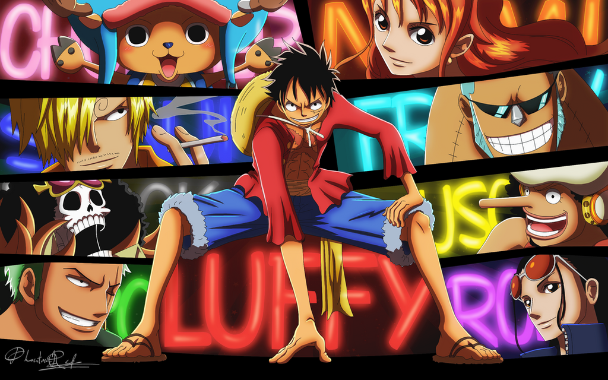

One Piece (bergaya dalam huruf besar semua) adalahseri manga Jepang yangditulis dan diilustrasikan oleh Eiichiro Oda . Telah serial di Shueisha 's Shonen manga majalah Weekly Shonen Jump sejak Juli 1997, dengan masing-masing bab yang disusun menjadi 101 tankōbon volume pada Desember 2021. Ceritanya mengikuti petualangan Monkey D. Luffy , seorang bocah lelaki yang tubuhnya memperoleh sifat karet setelah secara tidak sengaja memakan Buah Iblis. Dengan kru bajak lautnya, bernama Bajak Laut Topi Jerami, Luffy menjelajahi Grand Line untuk mencari harta karun pamungkas dunia yang dikenal sebagai "One Piece" untuk menjadi Raja Bajak Laut berikutnya.
Manga ini melahirkan waralaba media , yang telah diadaptasi menjadi film festival yang diproduksi oleh Production IG , dan serial anime yang diproduksi oleh Toei Animation , yang mulai disiarkan di Jepang pada tahun 1999. Selain itu, Toei telah mengembangkan empat belas film animasi fitur, satu OVA dan tiga belas spesial televisi. Beberapa perusahaan telah mengembangkan berbagai jenis merchandising dan media, seperti permainan kartu perdagangan dan berbagai permainan video . Seri manga dilisensikan untuk rilis bahasa Inggris di Amerika Utara dan Inggris oleh Viz Media dan di Australia oleh Madman Entertainment . Serial anime ini dilisensikan oleh4Kids Entertainment untuk rilis bahasa Inggris di Amerika Utara pada tahun 2004, sebelum lisensi dijatuhkan dan kemudian diakuisisi oleh Funimation pada tahun 2007.
One Piece telah menerima pujian untuk cerita, seni, karakterisasi, dan humornya. Manga ini telah menerima banyak penghargaan dan diberi peringkat oleh kritikus, pengulas, dan pembaca sebagai salah satu manga terbaik sepanjang masa. Beberapa volume manga telah memecahkan rekor penerbitan, termasuk cetakan awal tertinggi dari buku mana pun di Jepang. Pada tahun 2015, One Piece menetapkan Rekor Dunia Guinness untuk "salinan terbanyak yang diterbitkan untuk seri buku komik yang sama oleh satu penulis". Itu adalah manga terlaris selama sebelas tahun berturut-turut dari 2008 hingga 2018, dan merupakan satu-satunya manga yang memiliki cetakan awal volume di atas 3 juta terus menerus selama lebih dari 10 tahun, serta satu-satunya yang telah mencapai lebih dari 1 juta kopi terjual di semua 100 tankōbon . yang diterbitkan volume.
Pada Juli 2021 , One Piece memiliki lebih dari 490 juta eksemplar yang beredar di 58 negara dan wilayah di seluruh dunia, menjadikannya seri manga terlaris dalam sejarah, dan seri komik terlaris yang dicetak dalam volume buku. Ini juga salah satu waralaba media terlaris sepanjang masa.
Industri anime terdiri dari lebih dari 430 perusahaan produksi , termasuk studio besar seperti Studio Ghibli , Sunrise , dan Toei Animation . Sejak tahun 1980-an, media ini juga telah melihat kesuksesan internasional dengan munculnya program sulih suara dan subjudul asing . Pada 2016, anime Jepang menyumbang 60% dari acara televisi animasi dunia.
Premis
Serial ini berfokus pada Monkey D. Luffy , seorang pemuda yang terbuat dari karet yang terinspirasi oleh idola masa kecilnya, bajak laut kuat Shanks "Rambut Merah" memulai perjalanan dari Laut Biru Timur untuk menemukan harta karun mitos, One Piece. dan memproklamirkan dirinya sebagai Raja Bajak Laut. Dalam upaya untuk mengatur krunya sendiri, Bajak Laut Topi Jerami , Luffy menyelamatkan dan berteman dengan seorang pemburu bajak laut dan pendekar pedang bernama Roronoa Zoro , dan mereka pergi mencari harta karun tituler. Mereka bergabung dalam perjalanan mereka oleh Nami , seorang pencuri dan navigator yang terobsesi dengan uang; Usopp , penembak jitu dan pembohong kompulsif; dan Vinsmoke Sanji, koki sesat tapi sopan. Mereka memperoleh sebuah kapal, Going Merry , dan terlibat dalam konfrontasi dengan bajak laut terkenal dari East Blue. Saat Luffy dan krunya memulai petualangan mereka, yang lain bergabung dengan kru kemudian dalam seri, termasuk Tony Tony Chopper , seorang dokter rusa antropomorfis; Nico Robin , seorang arkeolog dan mantan pembunuh bayaran Baroque Works ; Franky , pembuat kapal cyborg; Brook , musisi kerangka dan pendekar pedang; dan Jimbei , seorang juru mudi manusia ikan dan mantan anggota Tujuh Panglima Perang Laut . Setelah Pergi Merrymenjadi rusak tidak dapat diperbaiki, Bajak Laut Topi Jerami memperoleh kapal baru, Thousand Sunny , [Jp 3] yang dibangun oleh Franky. Bersama-sama, mereka bertemu bajak laut lain, pemburu hadiah, organisasi kriminal, revolusioner, agen rahasia, dan tentara Pemerintah Dunia yang korup , dan berbagai teman dan musuh lainnya, saat mereka mengarungi lautan untuk mengejar impian mereka.
Dunia dari One Piece
Dunia One Piece dihuni oleh manusia dan banyak ras lain, seperti manusia ikan dan duyung (dua ras ikan/manusia hibrida), kurcaci, cerpelai (ras humanoid dengan fitur hewan), dan raksasa . Diliputi oleh dua samudera luas, yang dipisahkan oleh barisan pegunungan besar yang disebut Garis Merah,]yang juga merupakan satu-satunya benua di dunia. Grand Line, laut yang tegak lurus dengan Garis Merah, selanjutnya membaginya menjadi empat laut: Biru Utara, Biru Timur, Biru Barat, ] dan Biru Selatan. Di sekitar Grand Line terdapat dua wilayah yang disebut Calm Belts, mirip dengan garis lintang kuda , yang hampir tidak mengalami angin atau arus laut dan merupakan tempat berkembang biak bagi makhluk laut besar yang disebut raja laut. Karena itu, sabuk tenang menjadi penghalang yang sangat efektif bagi mereka yang mencoba memasuki Grand Line. Namun, kapal angkatan laut, anggota organisasi antar pemerintah yang dikenal sebagai Pemerintah Dunia, dapat menggunakan batu prisma laut untuk menutupi kehadiran mereka dari raja laut dan dapat dengan mudah melewati sabuk yang tenang. Semua kapal lain terpaksa mengambil rute yang lebih berbahaya, melewati gunung di persimpangan pertama Grand Line dan Red Line, sistem kanal yang dikenal sebagai Reverse Mountain. Air laut dari masing-masing empat lautan mengalir ke atas gunung itu dan menyatu di puncaknya mengalir ke kanal kelima dan masuk ke paruh pertama Grand Line, yang disebut Surga karena bagaimana dibandingkan dengan paruh kedua . Paruh kedua Grand Line, di luar persimpangan kedua dengan Red Line, dikenal sebagai Dunia Baru.
Arus dan cuaca di laut lepas Grand Line sangat tidak terduga, sedangkan di sekitar pulau iklimnya stabil. Medan magnet di dalam Grand Line menyebabkan kompas normal tidak berfungsi, membuatnya semakin sulit untuk dinavigasi, dan sebagai gantinya kompas khusus yang disebut Log Pose harus digunakan. Log Pose berfungsi dengan mengunci medan magnet satu pulau dan kemudian mengunci medan magnet pulau lain. Waktu untuk mengaturnya tergantung pada pulau. Proses ini dapat dilewati dengan mendapatkan Pose Abadi, variasi Log Pose yang diatur secara permanen ke pulau tertentu dan tidak pernah berubah.
Dunia One Piece mencakup hewan yang berfungsi seperti perangkat. Keong Transponder adalah hewan mirip bekicot yang berfungsi seperti telepon putar , mesin fax , atau kamera. Dials, yang kerang hewan langit-tinggal tertentu, dapat digunakan untuk menyimpan energi kinetik, angin, suara, gambar, panas, dan seperti dan memiliki berbagai aplikasi.
Buah Iblis
Buah Iblis adalah jenis buah yang jika dimakan memberikan kekuatan pada pemakannya. Seseorang hanya boleh memakan satu Buah Iblis selama hidupnya, karena memakan Buah Iblis kedua akan dengan cepat mengakhiri hidupnya.Ada tiga kategori Buah Iblis;
• Paramecia adalah kategori buah yang memberikan pengguna berbagai kemampuan manusia super, seperti fisiologi karet Luffy, generasi pelengkap Nico Robin, atau kebangkitan diri Brook. Buah Zoan ] memungkinkan pengguna untuk sepenuhnya atau sebagian berubah menjadi hewan tertentu, seperti bagaimana Tony Tony Chopper dapat berubah menjadi hibrida manusia-rusa. Buah Zoan tertentu memungkinkan pengguna untuk berubah menjadi makhluk prasejarah, seperti X Drake yang bisa berubah menjadi Allosaurus , dan bahkan makhluk mitos, seperti bagaimana Marco bisa berubah menjadi phoenix . Melalui teknik yang tidak diketahui yang dikembangkan oleh ilmuwan Dr. Vegapunk, benda mati juga bisa "memakan" Buah Iblis dan mendapatkan perasaan, seperti bagaimana pedang Spandam menjadi gajah.
• Buah-buahan Logia memberikan kontrol dan memungkinkan pengguna "mengubah struktur tubuh hidup mereka menjadi kekuatan alam", seperti kontrol Smoker atas asap, kontrol Portgas D. Ace atas api, dan kontrol Sir Crocodile atas pasir.
Buah Iblis dikatakan sebagai inkarnasi dari iblis laut itu sendiri dan akibatnya, pengguna Buah Iblis tidak dapat berenang di air laut karena "mereka dibenci oleh laut". Bahkan ketika sebagian terendam air laut, mereka kehilangan semua kekuatan dan koordinasi mereka, meskipun beberapa kemampuan tetap ada. Misalnya, Luffy masih bisa meregang setelah benar-benar tenggelam. Batu prisma laut juga memiliki efek ini. Air yang bergerak, seperti hujan atau ombak, tidak memiliki efek ini. Ketika pengguna Buah Iblis mati, kekuatannya akan bereinkarnasi menjadi Buah Iblis baru. Untuk alasan yang tidak diketahui, pengguna Buah Iblis tidak dapat memakan Buah Iblis kedua karena akan menyebabkan tubuh mereka meledak, meskipun antagonis seri Blackbeardberhasil mendapatkan kekuatan Buah Iblis kedua melalui metode yang tidak diketahui. Kekuatan Buah Iblis juga bisa "dibangunkan", sangat meningkatkan kekuatan dan utilitas kemampuan pengguna.
Ada juga Buah Iblis buatan yang dibuat oleh Caesar Clown yang disebut SMILE yang memungkinkan pengguna untuk mendapatkan kemampuan hewan tertentu, tetapi hanya memiliki sebagian bagian dari hewan seperti kaki, telinga, atau kepala yang menonjol dari anggota tubuh mana pun. tubuh, seperti kepala binatang di perut atau di tempat tangan, sayap di kepala atau pinggang, atau binatang muncul di tempat kaki mereka.
Haki
Haki (覇気, lit. "Ambisi") adalah kemampuan terpendam yang dimiliki setiap makhluk hidup di dunia One Piece ; sangat sedikit yang berhasil membangunkannya, dan bahkan lebih sedikit lagi yang menguasainya. Ada tiga jenis Haki: Warna Pengamatan (見聞色の覇気, Kenbunshoku no Haki ) memungkinkan seseorang merasakan kehadiran makhluk lain dan memiliki bentuk prekognisi terbatas. Color of Arms (武装色の覇気, Busōshoku no Haki ) memungkinkan seseorang untuk menyelubungi bagian tubuh dan bahkan benda mati dengan kekuatan yang mirip dengan baju besi tak terlihatyang memiliki sifat defensif dan ofensif. Itu juga memungkinkan seseorang untuk melukai pengguna Buah Iblis logia. Warna langka dari Raja Tertinggi (覇王色の覇気, Haōshoku no Haki ) adalah kemampuan yang, tidak seperti dua Haki lainnya, hanya dimiliki oleh beberapa orang berbakat. Warna Raja Tertinggi memungkinkan seseorang untuk mengalahkan kehendak orang yang berkemauan lemah. Ini dapat digunakan untuk memaksa orang lain agar tunduk atau bahkan membuat korban tidak sadarkan diri. Orang yang berkemauan keras dapat menahan, atau bahkan mengabaikan sama sekali, efek dari Haki ini, bahkan jika mereka sendiri tidak memiliki kemampuan tersebut. Haki ini juga dapat menimbulkan dampak fisik, seperti menimbulkan gelombang kejut dan kehancuran di sekitar pengguna.
Last updated 3 mins ago